PreMoneyDesigned and built · 14 min read
Bank texts turned into a spending list that says when it is unsure.
PreMoney is an Android app I designed and built on my own. It reads the bank alerts already on my phone and turns them into a list of payments I can check and correct.
- Role
- Design and build, solo
- Why
- A spending log without retyping what my bank texts me
- Timeline
- July to August 2026
- Platform
- Android only. iPhones do not let apps read texts
- Stack
- Flutter, Dart, Riverpod, SQLite
- Status
- Version 1.17.0, a personal tool. Not on Google Play
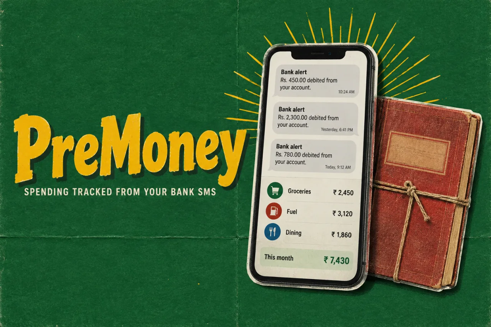
In short
- The problem: my bank already texts me about every payment, but those texts also include OTPs, adverts and statements. A wrong number in a money app is worse than no number.
- What I built: an Android app that reads bank alerts, asks each one for proof that money moved, and saves it once. Anything it cannot read cleanly goes to a review queue instead of being guessed.
- The key idea: when the app is unsure, it says so. One correction from me then fixes every entry of the same kind, past and future.
- Where it stands: version 1.17.0, built over six days in July and August 2026. It is a personal tool. I have no accuracy figures from real messages and no other users.
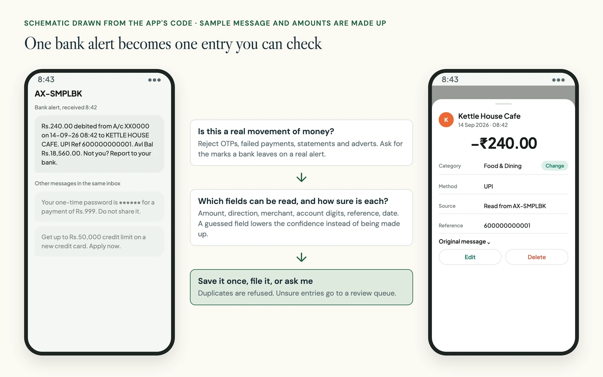
01 Why I built it
My bank already tells me what I spend, mixed in with everything else
Every UPI or card payment I make sends me a text. Together those texts are almost a full spending log. Typing the same payments into an expense app felt like doing the work twice.
The catch is that most texts from a bank are not payments. OTPs quote amounts. Card adverts use the word "credit". Statements quote totals and due dates. A failed payment still says "debited".
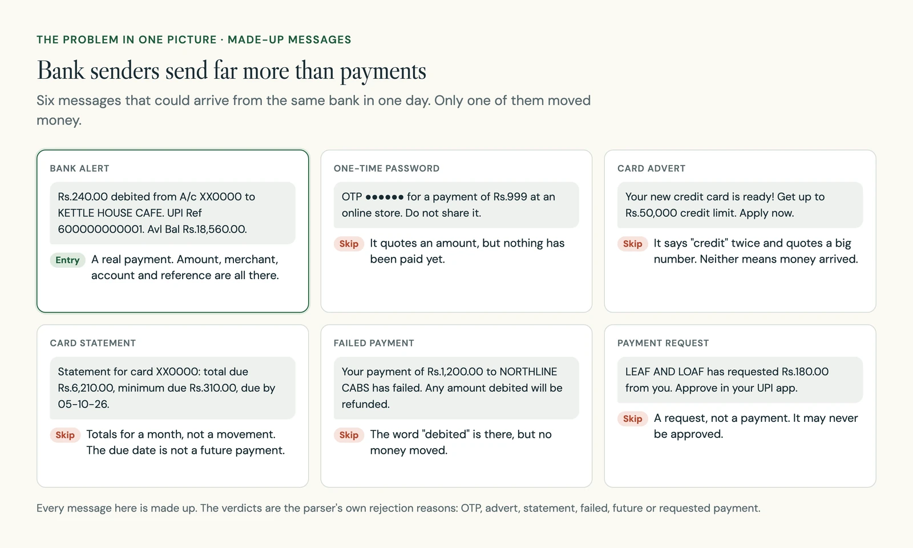
So the design question was not how to read a payment. It was how to tell a payment from everything that looks like one, and what to do when the app cannot tell.
02 How it works
Four ways in, one path through, three ways out
A bank alert can reach the app four ways. It can be found in a scan of the inbox, caught live while the app is open, caught in the background while it is closed, or shared in from another app. All four go through the same steps.
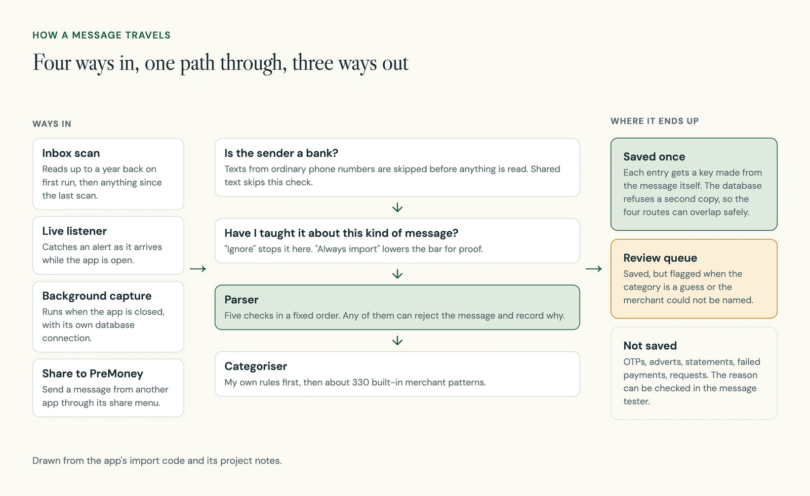
The app has four tabs: Home, Activity, Insights and Goals. The tools for checking the parser sit under Settings.
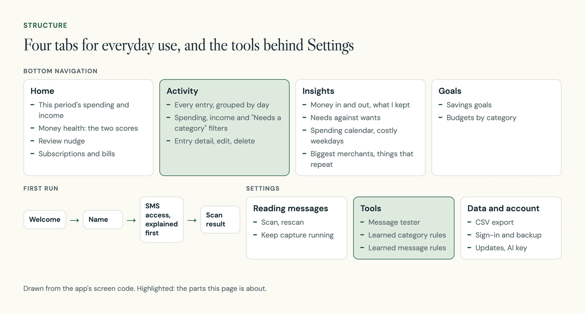
On first run the app explains why it wants to read messages before Android asks for permission. It then reads up to a year of bank alerts and says how many it added and how many it skipped. Cash, and anything the messages missed, I add by hand.
03 Decision 1
Ask each message for proof that money moved
What you see: the advert does not appear. Nothing in the list asks me to clean up a payment that never happened.
In the build: the first parser accepted anything that a list of blocked words did not catch. That was the wrong default. Bank adverts come from the same senders as real alerts, quote rupee amounts and talk about credit cards. The word "credit" was read as money coming in.
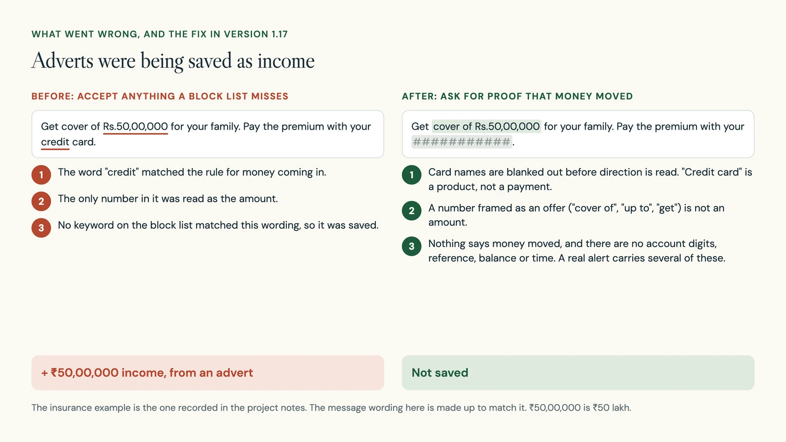
Every new advert wording leaked through until I added another blocked word. So in version 1.17 I turned the question around. The parser now asks what a bank leaves behind on a real alert, things an advert has no reason to carry.
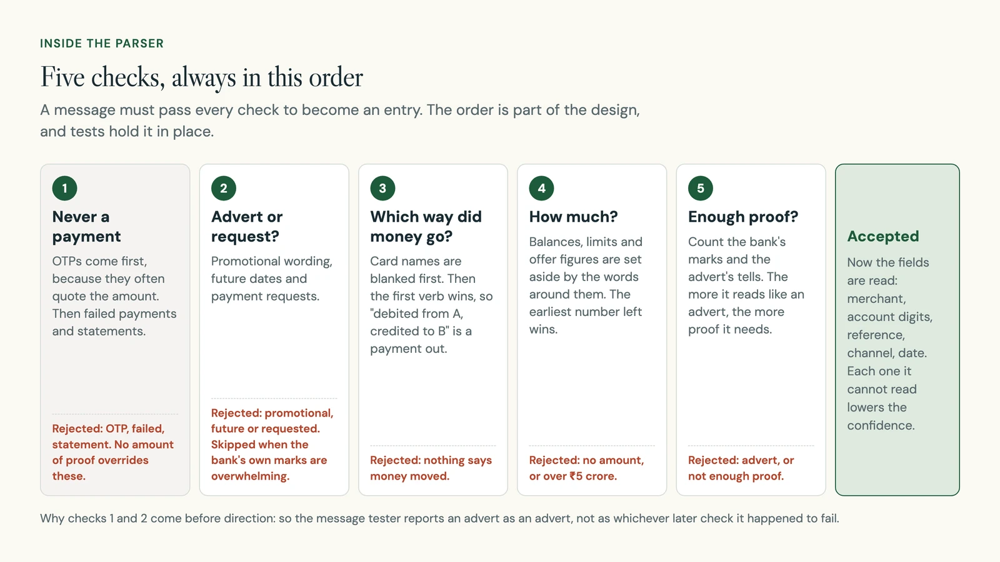
The last check scores proof. A masked account number, a reference number, the balance afterwards and a "Not you?" line each count. The more advert wording a message has, the more of that proof it needs.
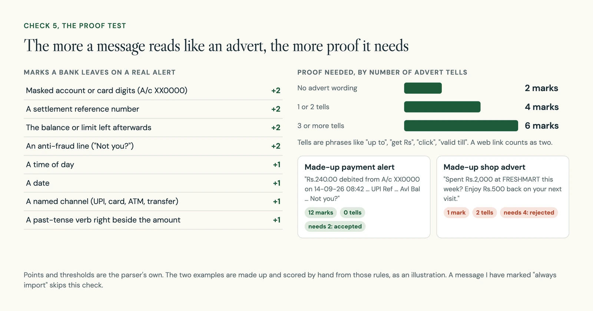
The order of the checks matters, and tests hold it in place. Advert checks run before direction, so the message tester reports an advert as an advert. One test file has a simple rule: every advert in it must be rejected, and every genuine alert must be accepted with the right amount and direction.
04 Decision 2
When a field cannot be read, lower the confidence and ask
What you see: an entry the app is unsure about gets a small warning mark, and Home tells me how many are waiting. A merchant it could not read shows as "UPI Payment" rather than a made-up name.
In the build: each accepted message gets a confidence score. It starts at 100% and drops for each field the parser could not read. The entry goes to the review queue if the merchant has no name or the category is only a guess.
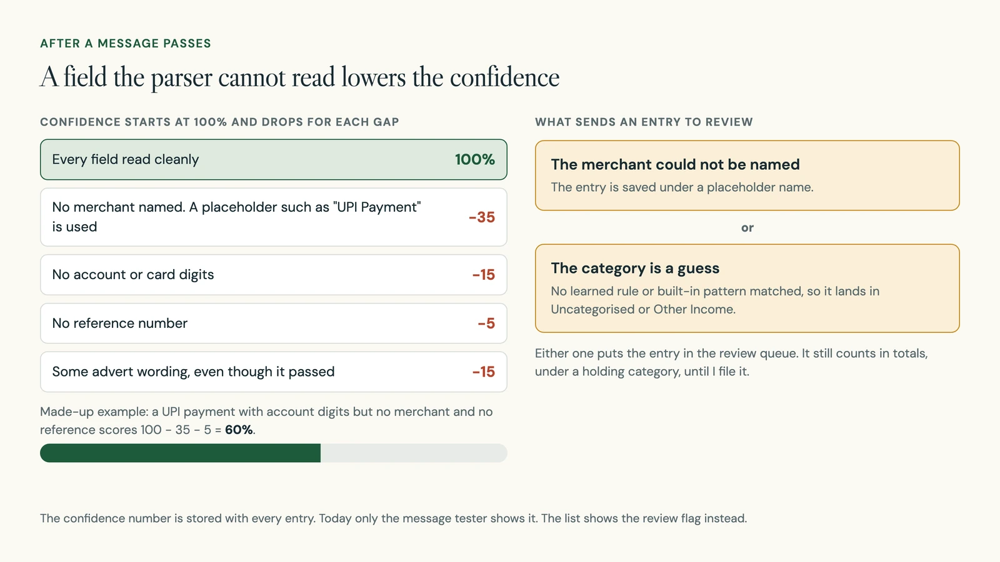
I did not build a separate review screen. The queue is the Activity list with one filter switched on, so there is nothing new to learn.
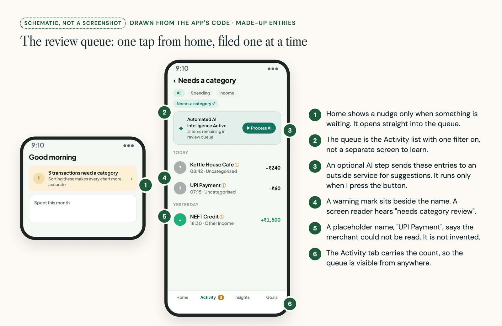
Opening an entry shows where it came from. The original message is one tap away, so I can check the app against the bank's own words.
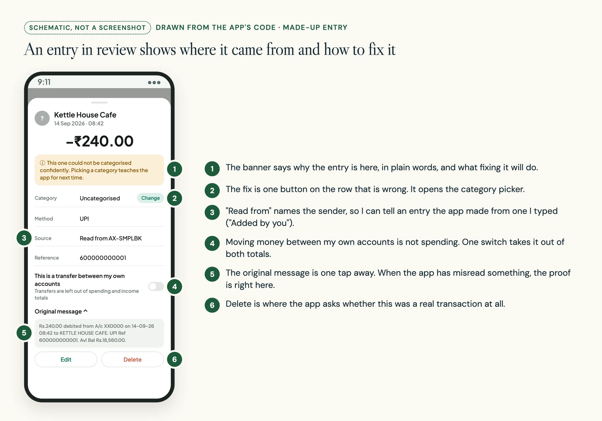
05 Decision 3
One correction should fix every entry of the same kind
What you see: when I change a category, a switch says "Remember this for" the merchant. It is on by default. When I delete an entry made from a message, the app asks whether it was a real transaction at all.
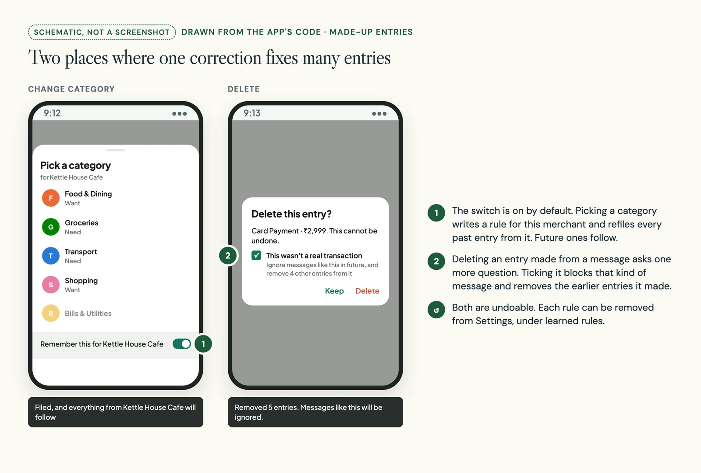
In the build: a category correction becomes a rule for that merchant. My rules run before the app's 330 or so built-in merchant patterns. The same action refiles every past entry from that merchant.
Blocking a message works on its template, not its exact text. The app blanks out the amounts, dates and reference numbers, and what is left is the wording the sender reuses. One tap can clear months of entries that a single advert campaign created.
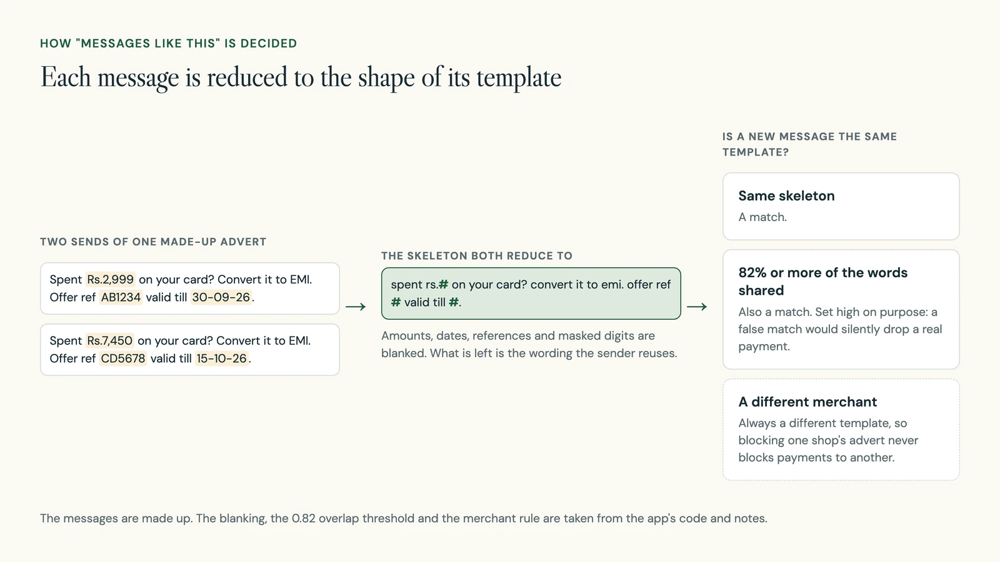
Two messages count as the same template if their skeletons match, or if 82% or more of their words overlap. I set that bar high on purpose. A false match would quietly throw away a real payment, which is worse than having to block a reworded advert twice.
06 Decision 4
A message tester that explains every decision
What you see: under Settings there is a page where I can paste any message and see what the parser makes of it. A rejection shows which check stopped it, plus the proof score and the advert score.
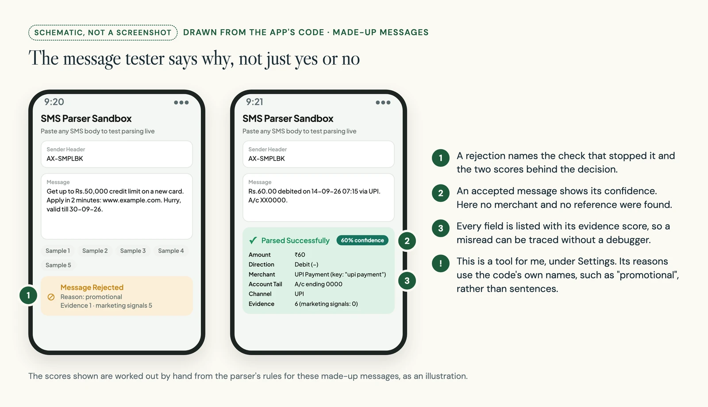
In the build: every rejection carries a reason, and every result carries both scores. My rule for a bank that changes its wording is to add the new message to the tests first, then fix the patterns. The tester shows which check a message trips without a debugger.
07 Decision 5
A score with missing data says so, instead of failing me
What you see: Home has two scores, a Saver Score and a Spender Score. With no income recorded, both say "Not enough data", and a hint says what to add.
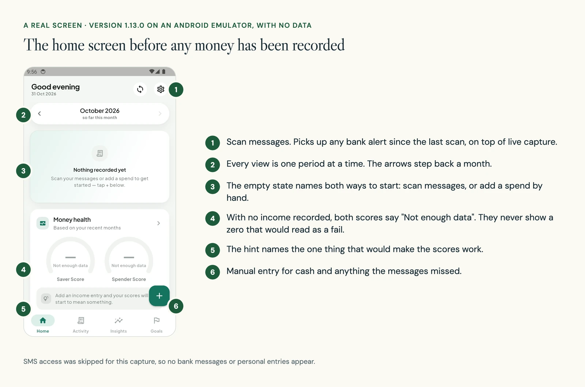
In the build: each score is made of parts, and each part has a stated target, such as saving 30% of income or keeping six months of costs in reserve. If a part cannot be measured, it is marked unavailable and the total is rescaled from the parts that can.
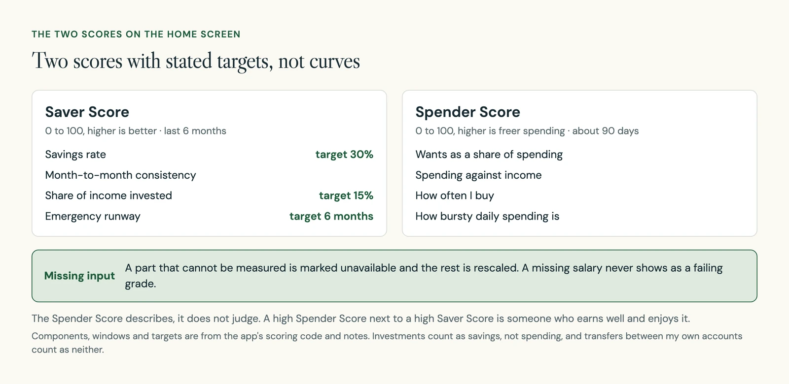
The Spender Score describes how I spend, it does not grade me. Investments count as savings, not spending, and moving money between my own accounts counts as neither.
08 What leaves the phone
Reading is local, but three optional features send data out
The parser, the categoriser and the database all run on the phone. Even the font is bundled, so the app works with no network at all.
Three later features change that, and I want to be exact about them. None of them runs until I use it.
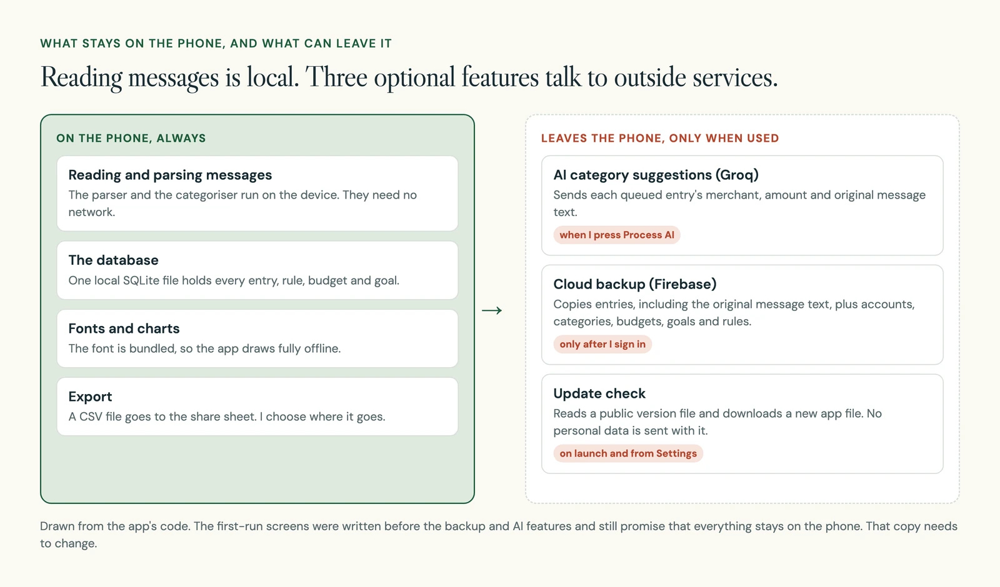
- AI suggestions: a button in the review queue sends each waiting entry's merchant, amount and original message to Groq, an outside AI service, and asks for a category.
- Backup: after I sign in, entries, including the original message, and my rules, budgets and goals are copied to Firebase.
- Updates: the app reads a public version file and downloads the new app when there is one.
09 The build
Screens never touch the database, and one number refreshes them all
Screens talk to Riverpod providers, providers call the domain logic, and only the repositories write SQL. After any write, one "data version" number goes up and every view that depends on data reloads. Nearly every write changes several screens, and listing them by hand at each call would have been a steady source of stale screens.
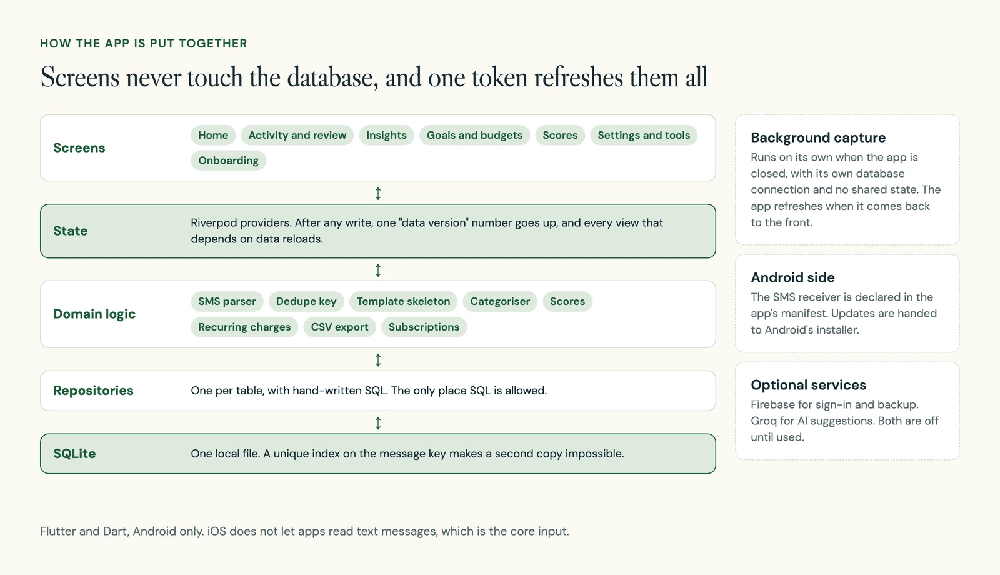
| Part | What I used |
|---|---|
| App | Flutter and Dart, Android only |
| State | Riverpod, with one data-version number |
| Storage | SQLite on the phone, hand-written SQL, no code generation |
| Messages | another_telephony for the inbox and live alerts |
| Charts | fl_chart, with an eight-colour palette checked for colour blindness |
| Optional services | Firebase for sign-in and backup, Groq for AI suggestions |
- 22
- commits, 28 July to 2 August 2026
- 76
- Dart files, about 19,800 lines
- 9
- test files, for the parser, adverts, duplicates, templates, categories, scores, export and sharing
- 177 of 184
- test messages imported in an emulator run at version 1.6, with all 7 non-payments rejected
That last number is a check, not an accuracy figure. The messages were test messages I sent to an emulator, and the run was before the parser was rewritten in version 1.17.
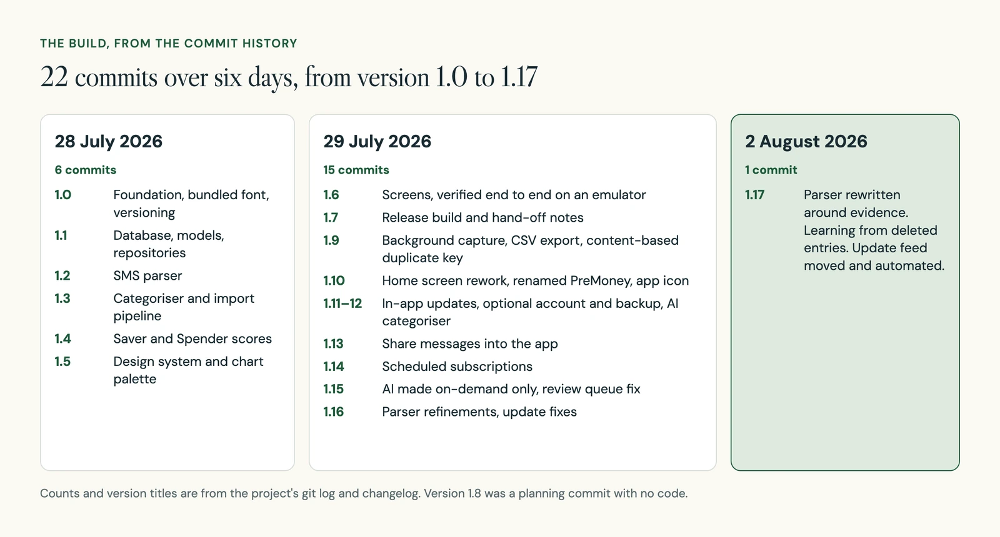
The hardest problems were the quiet ones, where nothing showed an error.
| Area | What went wrong, and what I changed |
|---|---|
| Live capture | It never fired, in front or in the background, and logged nothing. The message plugin does not declare its own receiver, so the app has to. I added it to the app's manifest in version 1.9. |
| Duplicates | The duplicate key used the inbox row number, which a live message does not have. Roughly half of Indian bank alerts carry no reference number, so most live captures were saved twice by the next scan. The key is now built from the message content, and a migration re-keyed the old rows. |
| Updates | The update file sat in a private repository, so every check failed, and the check hid its own errors. The app looked up to date and never updated. The feed now lives in a public repository, the release script writes it last, downloads are checked against their size and hash, and errors show in Settings. |
10 Accessibility
Charts that do not depend on colour alone
I first picked 14 colours for categories by eye. A palette checker failed them on strength of colour and on how well they separate, both for normal vision and for colour blindness. I cut the set to eight colours that pass, and charts fold anything beyond eight into a grey "Other".
Every chart also has a legend with values, so no category is known by colour alone. Each list entry reads out in full to a screen reader, including "needs category review" when it is in the queue.
11 Where it stands
Working on my phone, with no accuracy figures yet
PreMoney is at version 1.17.0. It installs by hand from a public release page and updates itself from there. It is not on Google Play. Google restricts apps that read text messages, and a listing would need a separate declaration.
It is built for one person. These are not there yet:
- No measured accuracy on a labelled set of real messages. The tests check known cases, not a rate.
- No other users, and no evidence yet that the scores change how I spend.
- Some phone makers' battery managers can still stop background capture. A scan of the inbox picks up anything missed.
- A salary from an employer the app does not know lands in Other Income until I file it once.
12 What is next
Measure the parser, then fix what the app says about data
- Build a labelled set of messages with personal details removed, and count wrong accepts, wrong rejects and duplicates for each bank's format.
- Rewrite the first-run screens so they describe backup and AI suggestions plainly, with a clear way to say no.
- Show the confidence score in the list, and use the plain-English reasons in the message tester.
- Spot a salary on its own: a large credit that repeats near the start of each month.
13 What I learned
An honest gap beats a confident guess
The worst bug in this app was not a crash. It was an advert saved as ₹50 lakh of income, which looked exactly like real data. That changed how I designed the rest: ask for proof, mark what is unsure, and keep the original message one tap away.
I also learned to distrust silence. Live capture, duplicate keys and updates all failed without an error. Each fix ended with the same rule: if something can fail, it has to say so somewhere I will see it.
The song waits until you are ready.